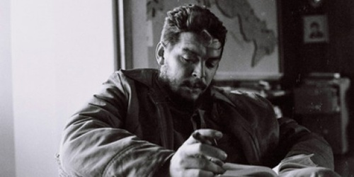

Nota de tapa
Che, el poeta eres tú

Protagonista vital del siglo XX, las ideas y las acciones del Che Guevara recorrieron el mundo de disímiles formas. Pero el Che también expresó siempre sus inquietudes literarias a través de ensayos, notas críticas, cuentos y poemas que valen la ...